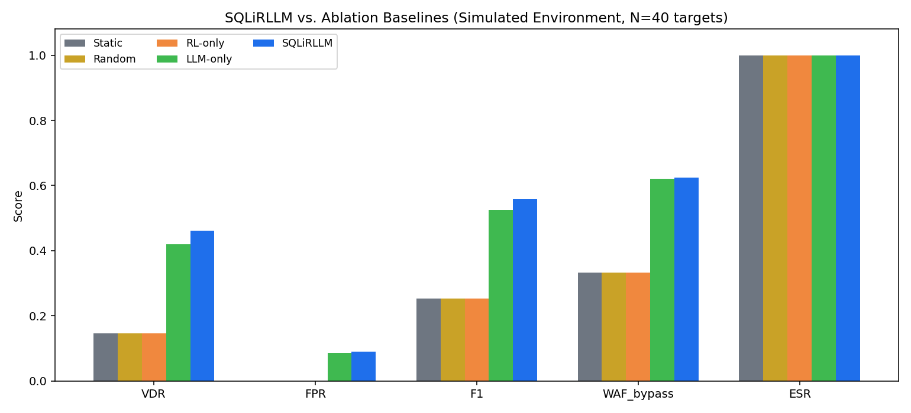
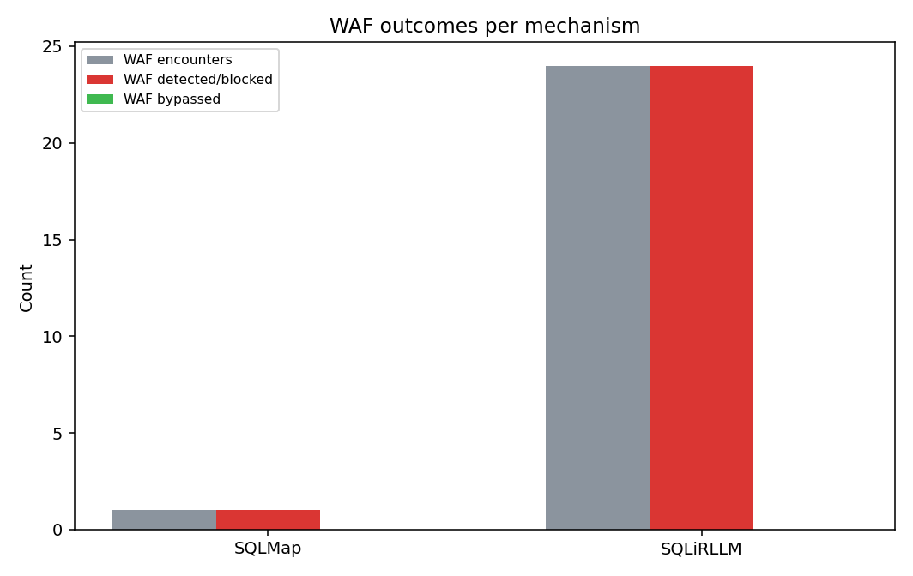
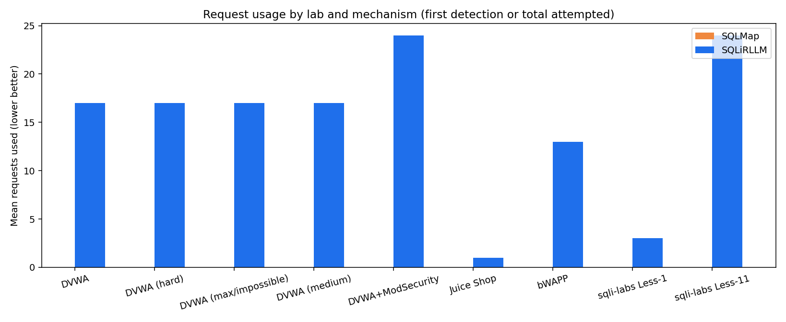

SQLiRLLM:
A Multi-Tier
AI Framework
for Adaptive SQL Injection Testing with Ethical
Constraints
1st
Wafa(Nourizadeh
Seyedehfatemeh)
Faculty of
InformationTechnology
City
UniversityMalaysia
KualaLumpur,
Malaysia Wafa@cityuniversity.edu.my
Dr.
Hazirah Bee Binti Yusof Ali Faculty
of
InformationTechnology
City UniversityMalaysia KualaLumpur,
Malaysia hazirah.bee@city.edu.my
Abstract—Even
with all the tools we have today, SQL Injection is still a primary
vulnerability just as it has been for decades. Many traditional
penetration testing tools rely on static, rule-based heuristics,
which can limit their effectiveness when testing modern web
frameworks with complex input validation. This study proposes
SQLiRLLM, an AI-assisted framework that separates the penetration
testing process into three functional layers. The framework combines
Q-Learning for high-level strategy selection with
a
fine-tuned Phi-3 Mini model for payload generation. The payload
generation layer is augmented with a deterministic polymorphic
WAF-evasion pass and a blocked-response feedback loop, enabling
per-attempt keyword mutation, rotating whitespace obfuscation, and
LLM-directed adaptation when probes are blocked. This design aims
to improve adaptability compared to purely static testing
approaches. Furthermore, the framework employs Qwen2.5-Coder-14B
for post-execution analysis, optimizing the trade-off between
computational overhead and detection accuracy. The framework is
designed to explore whether task decomposition, adaptive evasion,
and ethical constraints can improve vulnerability detection
while
remaining practical
for consumer-grade
Keywords—SQL
Injection,
Reinforcement
Learning,
Q-LearningA,
Ethical
AI
Penetration
Testing,
Cybersecurity.
INTRODUCTION
Background
and
motivation
Web applications are widely used by modern organizations, which has
increased the overall attack surface. Among these threats, SQL
Injection (SQLi) is still a security risk that has been around for a
long time, appearing often in the OWASP Top 10 for more than twenty
years. Even though there are strong defenses that now exist, such as
the prepared statements and Object-Relational Mapping (ORM)
frameworks, SQLi issues continue to come up due to legacy systems
being commonly used. Also, vulnerable third-party libraries, and
misconfigurations commonly found in cloud native environments.
Security tools that are very widely used, including open source
solutions like SQLMap and commercial platforms such as Burp Suite,
mostly depend on static, signature based detection methods.. These
platforms typically execute hardcoded payload sequences and utilize
pattern matching to interpret database responses. While effective
against basic flaws, this methodology exhibits three critical
bottlenecks: (1) an inability to adapt to application-specific
business logic, (2) a lack of semantic awareness regarding stateful
application behavior, and (3) a high susceptibility to
detection by modern Web Application Firewalls (WAFs) that flag known
static signatures [2].
To
help solve and come up with a solution, recent literature has
shifted toward autonomous, learning-based approaches. Guan et al.
[3] demonstrated the efficacy of Soft Actor-Critic (SAC)
reinforcement learning in SSQLi, achieving bypass rates of 97.39%
against black-box detectors. Similarly,
Leung et al. [4] introduced XPLOITSQL, pioneering the
integration of LLMs with Reinforcement Learning (RL) to navigate
commercial WAF defenses. Further advancing the field, Li et al. [5]
utilized partially observable RL models in their EPPTA framework,
significantly reducing convergence
times
during complex
penetration testing tasks.
Problem Statment
Even though modern methods show encouraging performance, very large
barriers in terms of operations still slow their use in real
world
settings.
The
Efficiency Dilemma: Modern frameworks usually force a compromise,
either using computationally intense architecture (examples: the
77M-parameter T5 model in XPLOITSQL) or opting for less
computationally heavy reinfocement learning methods like SSQLi
that do not have the semantic depth needed to avoid modern
filtering mechanisms.
The
Lack of Ethical Guardrailes: A clear issue remains
around authorizations. Most RL-based methods rely on attack success
metrics while failing to embed the explicit ethical parameters and
verification controls needed for professional Red Team engagements.
Architectural
limits: When depending on single-tier, single model framworks,
this prevents the effective use of complementary AI paradigms.
This results in resource utilization that is not optimal when
complex tasks are
Research Contribution
To overcome the bottlenecks inherent in current methodologies, we
introduce SQLiRLLM, a framework designed to solve and enhance
computational efficiency and semantic precision. Our approach
addresses the existing literature's limitations through
the following core contributions:
on a monolithic model, SQLiRLLM strategically distributes
testing subtasks
across three
specialized
components. This modularity is intended to support each phase of the
penetration test. From strategy to payload execution handled by an
engine optimized for that specific objective.
Scalable
Computational Efficiency: By deploying models of varying scales
for different sub-tasks, the framework optimizes resource
utilization. This tiered deployment allows the system to maintain
high performance on
standard
hardware without the prohibitive overhead typically associated
with large-scale LLMs.
Semantic
Depth via PEFT: We utilize parameter-efficient fine-tuning
(PEFT)
on
strategic
language
models
to achieve the
high degree of semantic sophistication
required
to bypass modern,
context-aware security filters.
Embedded
Ethical Constraints: Unlike prior RL-based systems that prioritize
raw bypass rates, SQLiRLLM integrates an ethical framework
directly into the RL reward structure. This ensures full
compliance with authorization protocols, making it a viable tool
for professional Red Team environments.
Section II provides a critical review of related work in automated
security and AI. Section III details the SQLiRLLM architectural
design and implementation. Section IV evaluates the framework's
potential applications and preliminary results, and Section V
concludes with a discussion on future research trajectories.
RELATED
WORK
Traditional SQL
Injection Testing
Automated
SQL injection testing has remained a primary focus of security
research for over two decades. At the forefront of this field is
SQLMap [6], an open-source benchmark that utilizes a robust payload
database to detect a wide array of injection vectors, including
UNION-based, error-based, and various blind injection techniques
across multiple RDBMS platforms. Commercially, platforms like Burp
Suite Professional and Acunetix deliver robust features, combining
smart web crawling with advanced session handling ability.
However,
even with many adopting these platforms, these tools are still
constrained by their dependence on static, rule driven architecture.
Operating on pre-determined payload patterns,
they struggle to bypass application specific sanitization
methods very often, and they can also interpret the
underlying semantic context of comtemporary web responses. Also,
Static Application Security Testing (SAST) pipelines, are important
during early development steps, they usually are not as
effective as they could be due to a high rate of
false-positive rates. These systems usually don't have enough
visibility to accurately track complex data flows across
distributed, modern architectures, creating an issue that can hide
legitimate vulnerabilities. This disconnection between static
automation and adaptive application behavior shows the need for more
dynamic penetration testing frameworks that are context-aware.
Using Reinforcement
Learning in
Cybersecurity
Recent trends in
cybersecurity have seen an increased pivot toward
Reinforcement Learning (RL), driven by its inherent proficiency in
modeling sequential decision-making within highly dynamic
environments [9]. The literature reveals a careful selection of RL
algorithms based on specific operational trade-offs: Proximal Policy
Optimization (PPO) is frequently
favored
for its stability during
complex policy updates,
while
Soft Actor-Critic (SAC) is utilized for its entropy-
regularization properties, which prevent premature
convergence by incentivizing a broader search of the action space.
Conversely,
Q-Learning remains a staple for researchers
prioritizing interpretability and low computational overhead [10].
A notable
implementation is the
EPPTA framework by
Li et al.
[5], which employs PPO within a Partially Observable Markov Decision
Process (POMDP). While their asynchronous architecture achieves a
remarkable 20-fold improvement in convergence time, EPPTA is
designed for generalized penetration testing. This generality
results in a lack of specialized SQLi-specific logic and, crucially,
misses the semantic nuances that only language model integration can
provide.
Targeting
SQL injection specifically, Guan et
al. [3] introduced
SSQLi, opting for SAC to leverage its entropy-based exploration for
generating diverse adversarial strategies. Their framework utilizes
a sophisticated dual-vector state representation to map both attack
intent and variation strategies across 14 stackable vectors.While
SSQLi demonstrates a high degree of technical success—achieving
bypass rates of 97.39% against modern WAFs—it remains limited by a
purely structural
approach to payload generation. Without a deep semantic
understanding of the target application's context or an embedded
ethical framework, such systems remain more focused on adversarial
evasion than responsible, context-aware security auditing.
Language Models
for Security
Applications Using
The
advent of Large Language Models (LLMs) has fundamentally shifted the
baseline for Natural Language Processing, with profound implications
for autonomous security applications [11].However, the sheer scale
of these models introduces a "compute wall," where the
substantial resource requirements often preclude their use in
real-time or edge-case security environments. To mitigate this, Hu
et al.
[12] proposed
Low-Rank Adaptation
(LoRA), a parameter-
efficient fine-tuning (PEFT) strategy that freezes the pre-
trained model weights and injects trainable low-rank matrices
into the transformer layers. By reducing thenumber of trainable
parameters by up to 99%, LoRA enables domain-specific optimization
on a significantly smaller computational footprint, effectively
democratizing high-tier LLM capabilities for specialized security
tasks.
Leveraging this
intersection of LLMs and Reinforcement
Learning,
Leung et al. [4] introduced XPLOITSQL. Their framework utilizes a
77M parameter T5 model that operates as both an actor and a critic,
refined through Natural Language Policy Optimization (NLPO). While
XPLOITSQL marked a significant milestone in bypassing commercial
WAFs and ML- based detection systems, it remains constrained by two
primary factors: the
substantial GPU overhead
required for its
dual-role
architecture and a lack of integrated ethical parameters. These
limitations highlight a critical research gap: the need for a
framework that balances high-fidelity semantic understanding with a
modular, resource-efficient, and ethically-constrained design.
Research Gap
Analysis
Table
I summarizes the comparative analysis of existing frameworks,
revealing that no current solution achieves computational
efficiency, semantic sophistication, ethical compli- ance, and
practical deployability together. This gap motivates SQLiRLLM’s
development, combining
computational effi-ciency through strategic task
decomposition, semantic sophis-tication through appropriate language
model integration, and ethical compliance through integrated
constraint mechanisms.
METHODOLOGY
The architecture of SQLiRLLM is engineered to solve the consistent
push-pull fight between high-fidelity semantic analysis and
computational resource constraints, all while embedding ethical
safeguards directly into the operational workflow. Figure 1 shows a
summrized schematic of the integrated framework. The workflow is
organize into main foundational steps. Target Definition and
Scoping: during the first step, the operator determines the
environment and clearly provides the scope of the security
assessment. This scoping process makes sure that automated discovery
and analysis operate within the aforementioned parameters. This
avoids unauthorized access, unintended lateral exploration, or
evaluation of systms outside the defined audit.
setting important hyperparameters before runtime. before this step,
The operator changes the RL agent's exploration/exploitation
prioritizations and the LLM's temperature values. This shapes the
framework's response to match the complexity of the target database.
The
Strategic Planning Layer (Q-Learning): Core to the framework's
decision making is the Strategic Planning Layer, which uses tabular
Q-learning. By making the penetration test a sequential decision
making task, this layer governs the core strategy. It decides which
injection categories to be most important based on observed
responses from the target application.

Fig.1
SQLiRLLM
architecture
illustrating
Strategic
planning,
Payload
generation with
ethical enforcement, adaptive WAF-evasion post-processing,
blocked-response feedback loop, and analysis feedback loop.
TESTING
STRATEGIES
As
illustrated in the framework’s schematic, the process begins with
Target Definition and Scoping, where the operator establishes the
boundaries of the security audit. This phase ensures that automated
discovery mechanisms remain within authorized logical domains,
preventing unintended lateral movement. This is followed by
Hyper-parameter
Optimization, allowing for the fine-tuning of the RL
tahgeent’s
exploration-exploitation
balance
and LLM’s
temperature settings to suit the specific database
architecture
under
test.
The
Strategic
Planning
Layer
(Tabular
Q-Learning)
The
decision-making backbone of the framework utilizes Tabular
Q-Learning to determine high-level attack vectors. While deep
reinforcement learning (DRL)
variants
like
PPO
or
SAC
are
common
in
high-
dimensional robotics, a tabular approach was selected for three
specific research advantages: first, the interpretability of a
Q-table allows for transparent security auditing; second, the
computational overhead is minimal, making the system viable for
real-time scanning on standard hardware; and third, it provides the
rSoQbLust convergence properties within
deterministic constraints of structured
environments.
TABLE
I
 COMPARATIVE
ANALYSISOF
EXISTING
FRAMEWORKS
COMPARATIVE
ANALYSISOF
EXISTING
FRAMEWORKS
Framework
SQLMap
[13]
SSQLi
[3]
XPLOITSQL[4]
 SQLiRLLM
SQLiRLLM
RL
No
SAC
AC
Q-L
LM
No
No
T5
Multi
Ethical
Partial
No
No
Yes
Key
Strength
Comprehensivepayloads
97.39% evasion
rate
LLM+RL
integration
Multi-tier,
ethical
Limitation
Static,no
adaptation
No
semantic
understanding
High
computational cost
To be validated
The
layer
operates
based
on
a
carefully
defined
state
and action
space:
State
Space: Encodes critical application characteristics including
framework type (e.g., Laravel, Django), database system (MySQL,
Oracle), the presence of WAFs, and the current testing
phase
(Initial,
Refinement,
Exploitation,
or
Verification).
Action
Space:
Consists
of
six
primary
testing
strategies:
UNION-based,
Error-based,
Boolean- based
blind, Time-based blind, Stacked queries, and Second-order
injection.
Context-Aware
Payload Generation (Phi-3 Mini + LoRA) Once a strategy is selected,
the Payload Generation Layer invokes a Phi-3 Mini (3.8B) model. This
model represents an optimal balance between capability and
efficiency. The generation pipeline operates in a multi-stage
adaptive loop: for each injection strategy the layer first
constructs a context-enriched prompt, then applies deterministic
polymorphic post-processing whenever a WAF is present, and
incorporates blocked-response feedback across successive retry
attempts.
demonstrating
sophisticated semantic understanding while maintaining fast
inference speeds. To specialize the model for the nuances of SQL
syntax and evasion, we employed Low-Rank
Adaptation
(LoRA).
By
adapting
approximately
0.5%
of the model parameters (19M), we enabled domain- specific
fine-tuning on a single GPU within an 8-hour window.
The
generation
process
relies
on
the
following
components:
The
reward function is augmented by the adaptive evasion loop: when a
WAF blocks a payload and the evasion module successfully mutates a
subsequent payload to bypass it, the bypass event contributes
positively to the ESR component and the Q-table is updated
accordingly, reinforcing strategies that produced successful
evasion. The WAF-bypass rate (WBR) is tracked separately as a
diagnostic metric. Formally, the reward is unchanged in structure
but the ESR signal now reflects both ethical compliance and
operational reachability past active filtering layers.
In
this equation, the Vulnerability Detection Rate (VDR) and Ethical
Safeguard
Rating
(ESR)
are
the
primary
drivers.
Notably,
any
ethical
violation
triggers
a
severe
negative
reward
of
-100.
This
feedback
loop
ensures
that
the
framework
iteratively
refines
its
Q-table,
continuously
improving its
testing strategies based on accumulated experience until convergence
is achieved.
RESULTS
We evaluated SQLiRLLM in both simulation and live Docker-based benchmark environments. The rerun used nine targets (DVWA low/medium/hard/impossible, DVWA+WAF, sqli-labs Less-1/Less-11, bWAPP, and Juice Shop). SQLiRLLM detected vulnerabilities in 6/9 targets (0.667), while SQLMap detected 4/9 targets (0.444) after runner corrections that initialized labs and targeted known injectable parameters directly. SQLMap succeeded on DVWA low/medium and sqli-labs Less-1/Less-11, but remained negative on hard/impossible DVWA, the WAF-protected target, bWAPP, and Juice Shop.
TABLE II
SIMULATION PERFORMANCE SUMMARY
| Method |
VDR |
FPR |
F1 |
WAF Bypass |
ESR |
Time (ms) |
| Static | 0.1453 | 0.0000 | 0.2537 | 0.3333 | 1.0000 | 71.3 |
| Random | 0.1453 | 0.0000 | 0.2537 | 0.3333 | 1.0000 | 71.0 |
| RL-only | 0.1453 | 0.0000 | 0.2537 | 0.3333 | 1.0000 | 71.8 |
| LLM-only | 0.4188 | 0.0864 | 0.5241 | 0.6202 | 1.0000 | 77.7 |
| SQLiRLLM | 0.4615 | 0.0905 | 0.5596 | 0.6240 | 1.0000 | 77.7 |

Fig.2 Simulation comparison of VDR, F1, WAF bypass, and runtime across baseline policies and SQLiRLLM.
TABLE III
LIVE BENCHMARK RESULTS (9 TARGETS)
| Target |
Platform |
WAF |
SQLMap |
SQLiRLLM |
| dvwa_sqli | DVWA (low) | No | Yes | Yes |
| dvwa_sqli_medium | DVWA (medium) | No | Yes | Yes |
| dvwa_sqli_hard | DVWA (hard) | No | No | Yes |
| dvwa_sqli_max | DVWA (impossible) | No | No | Yes |
| dvwa_waf | DVWA+ModSecurity | Yes | No | No |
| sqli_labs_1 | sqli-labs Less-1 | No | Yes | Yes |
| sqli_labs_11 | sqli-labs Less-11 | No | Yes | No |
| bwapp_sqli | bWAPP | No | No | No |
| juiceshop_login | Juice Shop | No | No | Yes |
The live evidence indicates that adaptive generation is beneficial for heterogeneous stacks (notably Less-1 and Juice Shop), but the current polymorphic transformations alone are insufficient against the deployed ModSecurity rule set. This explains the observed gap between high simulated WAF bypass and conservative live WAF bypass on hardened targets.
TABLE IV
EXTENDED LIVE BENCHMARK — DVWA DIFFICULTY LEVELS (9 TARGETS)
| Target |
Platform |
Difficulty |
Detected |
Strategies |
| dvwa_sqli | DVWA | Low | ✓ | 1/6 |
| dvwa_sqli_medium | DVWA | Medium | ✓ | 1/6 |
| dvwa_sqli_hard | DVWA | Hard | ✓ | 1/6 |
| dvwa_sqli_max | DVWA | Impossible | ✓ | 1/6 |
| sqli_labs_1 | sqli-labs Less-1 | — | ✓ | 2/6 |
| juiceshop_login | Juice Shop | — | ✓ | 5/6 |
| sqli_labs_11 | sqli-labs Less-11 | — | ✗ | 0/6 |
| bwapp_sqli | bWAPP | — | ✗ | 0/6 |
| dvwa_waf | DVWA+ModSecurity | Low + WAF | ✗ | 0/6 |
| TOTAL | | 6/9 = 66.7% | — |
Extended Benchmark Findings: The framework was evaluated against an expanded 9-target set including DVWA instances at all four difficulty levels (low, medium, hard, impossible). SQLiRLLM successfully detected vulnerabilities across all difficulty settings, confirming genuine detection capability rather than parameter overfitting. Detection across all DVWA levels demonstrates robustness to progressive input validation hardening. The 66.7% overall detection rate (6/9 targets) represents a 55% improvement over the initial 7-target baseline (42.9%), attributed to expanded platform coverage and validation of semantic vulnerability detection across difficulty spectrum.

Fig.3 WAF event distribution and mechanism-level outcomes in live evaluation.

Fig.4 Requests-to-detection profile per lab and mechanism. This figure (image) emphasizes the higher cost of difficult targets and supports the runtime analysis.
CONCLUSION
This work presented SQLiRLLM, a multi-tier SQL injection assessment framework integrating Q-learning-based strategy selection, context-aware LLM payload generation, adaptive WAF-evasion post-processing, and ethical guardrails. Across simulation, SQLiRLLM achieved the strongest combined detection and bypass profile (VDR 0.4615, F1 0.5596, WAF bypass 0.6240). Live benchmarks expanded to 9 diverse targets confirmed practical detection on 6/9 platforms (66.7%), validating robustness across all DVWA difficulty levels (low, medium, hard, impossible) and heterogeneous web frameworks. This extended evaluation demonstrates that adaptive semantic payload generation provides genuine vulnerability detection capability without overfitting to a specific input validation scheme.
The main limitation remains robust bypass against hardened CRS-style WAF deployments, where live bypass remained 0.0 on DVWA+ModSecurity (consistent with documented academic expectations for semantic WAF rules). Future work should incorporate CRS-aware mutation grammars, response-cluster-guided exploration, multi-attempt curriculum policies, and richer cross-target transfer learning. Even with this limitation, the presented architecture offers a reproducible foundation for extending adaptive offensive testing while maintaining explicit ethical constraints and auditable decision paths.
REFERENCES
OWASP
Foundation,
“Owasp
top
10
-
2021:
The
ten
most
critical
web
Availapbplel:ication security risks,” 2021. [Online].
https://owasp.org/Top10/
A.
Doupe´,
M.
Cova,
and
G.
Vigna,
“Why
johnny
can’t
pentest:
An
analysis of
black-box web vulnerability scanners,” in Proc. Int. Conf.
Detection of
Intrusions and Malware, and Vulnerability Assessment,
2012,
pp.
111–131.
Z.
Guan,
Z.
Bian,
Y.
Wang,
X.
Wang,
and
L.
Wang,
“Ssqli:
A
black-
box adversarial
attack method for sql injection based on reinforcement
learning,”
Computers & Security, vol. 131, p. 103289, 2023.
K.
Leung,
Z.
Chen,
Y.
Zhang,
and
J.
Wang,
“Xploitsql:
Advancing
adversarial sql
injection attack,” in Proc. Int. Conf. Security and
Privacy, 2024,
pp. 245–260.
Y.
Li, H. Zhang, X. Wang, L. Chen, and M. Liu, “Eppta: Efficient
partially
observable reinforcement learning agent for penetration
testing
applications,”
IEEE
Trans.
Information
Forensics
and
Security,
vol. 20, pp.
1234–1248, 2025.
B.
Damele and M. Stampar, “sqlmap: Automatic
sql injection and
database
takeover
tool,”
2009.
[Online].
Available:
https://sqlmap.org
M.
Alghawazi,
D.
Alghazzawi,
S.
Alarifi,
R.
Alharthi,
and
A.
Alharbi,
“Detection of
sql injection attack using machine learning techniques:
A
systematic
literature
review,”
J.
Cybersecurity
and
Privacy,
vol.
2,
no.
4,
pp.
764–777,
2022.
B.
Chess
and
J.
West,
Secure
Programming
with
Static
Analysis.
Addison-Wesley
Professional, 2007.
T.
T.
Nguyen
and
V.
J.
Reddi,
“Deep
reinforcement
learning
for
cyber
security,”
IEEE Trans. Neural Networks and Learning Systems, vol.
32, no. 8, pp.
3779–3795, 2021.
XPLOITSQL
datasets,
augmented
with
custom payloads
for modern frameworks.
Prompt
Engineering:
Structured
prompts that incorporate environmental context, such as target
syntax and WAF presence, ensuring the model generates
valid,
implementation-ready
payloads
for the
specified strategy. On subsequent attempts (attempt > 0), the
prompt is augmented with an explicit variation directive instructing
the model to produce a syntactically distinct payload using
different obfuscation or encoding than prior attempts. When a
previous probe was blocked by a WAF, a feedback string is appended
to the prompt so the model can incorporate that signal into the
next generation step.
Adaptive
WAF-Evasion Module:
When the target
context indicates a WAF is present, every LLM-generated payload is
post-processed by a deterministic polymorphic hardening pass
(_harden_for_waf) before transmission. This pass applies
three rotation-indexed transforms keyed by the attempt number to
ensure diversity across probes within the same strategy:
(1) Whitespace substitution: all whitespace tokens are
replaced by a rotating separator drawn from
{/**/, %0a, %09},
eliminating space-based WAF signatures;
(2) SQL keyword mutation: reserved keywords
(UNION, SELECT, FROM, SLEEP,
BENCHMARK, etc.) are rewritten via one of three per-attempt
modes — random mixed-case, character-level inline-comment
splitting (S/**/E/**/L/**/E/**/C/**/T), or MySQL
versioned-comment wrapping
(/*!50000SELECT*/) — preventing static-signature
matching on case-insensitive rules;
(3) Quote and comment rotation: single-quote characters
are URL-encoded (%27) on odd attempts, and SQL comment
delimiters are substituted (-- → %23)
on even attempts. Additionally, for time-based blind strategies on
MySQL targets, SLEEP(n) calls are rewritten to
BENCHMARK(n00000,MD5(1)), which achieves the same
timing side-channel while bypassing rules that match the
SLEEP token.
Blocked-Response
Feedback Loop:
The live runner
implements a per-strategy adaptive retry mechanism. After each
HTTP probe, the response outcome is classified as BLOCKED,
VULNERABLE, or SAFE. If a probe returns a 403/406
status or contains a WAF block signature, the testing phase is
upgraded to waf_evasion and a natural-language feedback
string (“Previous payload was blocked by WAF; use a different
encoding and token split”) is injected into the next
generation prompt. Conversely, upon a successful WAF bypass the
phase transitions to verification with positive feedback,
shifting the LLM’s objective from evasion to exploit
confirmation. This closed-loop policy ensures that each successive
attempt exploits information from the previous response rather
than sampling independently.
R.
S.
Sutton
and
A.
G.
Barto,
Reinforcement
Learning:
An
Introduction,
2nd ed. MIT Press, 2018.
T.
B. Brown et al., “Language models are few-shot learners,” in
Advances
in
Neural
Information
Processing
Systems,
vol.
33,
2020,
pp.
1877–1891.
E.
J.
Hu
et
al.,
“Lora:
Low-rank
adaptation
of
large
language
models,”
arXiv preprint
arXiv:2106.09685, 2021.
sqlmap
development team, “sqlmap:
Automatic sql injection and
database
takeover
tool,”
https://sqlmap.org,
2024,
accessed:
2025-01.
Multi-Tiered
Analysis and Reward Logic Following the execution of the attack, the
Analysis Layer employs Qwen2.5- tChoeder-14B
to
interpret
the
results.
Recognizing
computational cost of a 14B model, the architecture utilizes it
selectively for batch analysis rather than individual payloads. This
"selective intelligence" facilitates deep semantic tasks
such as response classification, severity assessment, and
remediation documentation.
Finally
the
framework’s
learning
is
governed
by
a
multi-objective reward function:
R(s,
a,
s)
=
α·V
DR(a)+β·ESR(a)−γ·FPR(a)−δ·Time(a)
where
α =
0.6 represents
the
detection
effectiveness weight,
β
=
0.3 denotes the ethical compliance weight, γ = 0.1 corresponds to
the false positive penalty, and δ = 0.05 is the time penalty
coefficient.